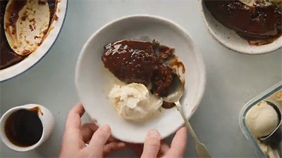

Dessert: Sticky Toffee Pudding
Ingredients:
Pudding:
- 125g/ 1 stick butter
- 1 tbsp golden syrup
- 1 tbsp black treacle
- 2 large free range eggs
- 1 tsp vanilla extract
- 150g/ 1 ¼ cup self-raising flour
- 150g/ 5 oz medjool dates, chopped
- 2 tsp bicarbonate soda
- Tub of vanilla ice cream, to serve
Sauce:
- 100g/ ¾ stick unsalted butter
- 150g/ ¾ cup dark muscovado sugar
- 3 tbsp golden syrup
- 150ml/ ⅔ cup double cream
- 1 tsp vanilla extract
- Generous pinch sea salt
Directions:
- Heat the oven to 160°C/140°C fan/325°F/Gas 3. To make the sticky toffee pudding, grease a 20cm/ 8" round ovenproof dish. Beat the butter and sugar together in a freestanding mixer until light and fluffy.
- Add the golden syrup, treacle, eggs and vanilla slowly and continue to mix. When this is done turn down the mixer to a slow speed and add the flour. When this is mixed well turn the mixer off.
- Bring 250ml/ 1 cup of water to a simmer in a small saucepan with the dates. After cooking for a few minutes add the bicarbonate of soda. Be careful as this mixture will foam up. Add this to the flour mixture when it is still hot. Combine the two and then pour into the prepared cake tin. Bake for 45-50 minutes, or until firm and slightly springy to the touch.
- Meanwhile, Make the toffee sauce, melt the butter, sugar and golden syrup together in a small pan until the sugar has dissolved. Add the cream, vanilla extract and salt and bring to a steady simmer for 3 minutes until the toffee sauce has nicely thickened. Remove from the heat.
- Drizzle the sticky toffee sauce all over the pudding and serve in the centre of the table with a tub of vanilla ice cream.
- Enjoy!

Credits: Donal Skehan, “BEST Sticky Toffee Pudding Recipe!" Mar. 31, 2014